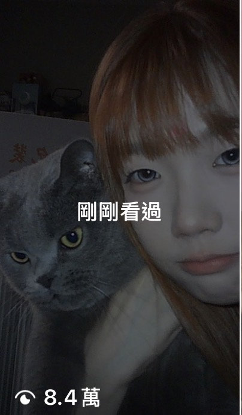

04 / LIFESTYLE / CREATOR COLLABORATION
일상의 취향에 녹아드는 협업
almostblue · VEASLY

배경
VEASLY의 라이프스타일 상품 소개 사례입니다. 대만 크리에이터가 almostblue 미니 카메라의 사용 경험과 구매 혜택을 소개했습니다.
문제
게시물은 소품을 직접 사용해 본 반응과 디자인에 대한 관심을 담고 있습니다. 제품 정보가 크리에이터의 기존 일상 콘텐츠에 자연스럽게 연결되어야 했습니다.
내 역할
대만 협업에서 상품과 타깃에 맞는 크리에이터 발굴, 조건 협의, 현지 가이드·검수와 게시 관리를 담당했습니다. 이 사례의 구체적인 선정 근거와 개인 기여는 [내용 추가 필요].
접근
실제 사용 경험을 중심으로 제품을 소개하고, 게시물 문구에 VEASLY 구매 정보와 무료 국제배송 혜택을 안내했습니다. 댓글에서도 제품의 디자인에 대한 반응을 확인할 수 있습니다.
결과
제공된 캡처 기준 조회수 약 8.4만 회, 좋아요 3,481개, 댓글 60개입니다. 이 협업의 주문·전환 성과는 [내용 추가 필요]. 루어딘 카메라 판매 성과와는 별도 사례입니다.
8.4만협업 콘텐츠 조회수 · 약캡처 시점 기준 · 플랫폼 반올림 표시

배운 점
[내용 추가 필요] 크리에이터 선정 기준, 소비자 댓글에서 얻은 시사점과 다음 가이드에 반영한 내용을 추가해주세요.